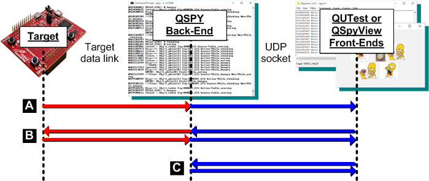
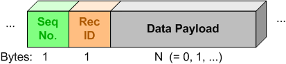

QTools
7.4.0
Collection of Host-Based Tools
This section describes the structure of the UDP packets exchanged between the QSPY Back-End and the various front-ends, such as QUTest and QView (blue arrows in the sequence diagram below).


The UDP packets exchanged between the QSPY Back-End and the QView Front-End consist of:
QView to detect any data discontinuities.The QSPY UDP socket supports two "channels":
A Front-End can choose the "data channels" when "attaching" to the QSPY host application (see qspy::attach()). The data channels are not exclusive, meaning that a front-end can "attach" simultaneously to both binary and text channels. In this case, the front-end would receive each packet as both binary and text formats.
This packet has Record-ID==ATTACH and Data Payload of the form:
| Data item | binary format | description |
|---|---|---|
| channels | B (byte) | Binary bitmask of QSPY channels to attach to |
This packet has Record-ID==DETACH and has no Data Payload.
This packet has Record-ID==SAVE_DIC and has no Data Payload.
This packet has Record-ID==SCREEN_OUT and optional Data Payload of the form:
| Data item | binary format | description |
|---|---|---|
| Output-state | B (byte) | ==0 means turn output off, !=0 means turn output on |
NOTE: In case no Data Payload is provided, the command toggles the output from its current state.
This packet has Record-ID==BIN_OUT and optional Data Payload of the form:
| Data item | binary format | description |
|---|---|---|
| Output-state | B (byte) | ==0 means turn output off, !=0 means turn output on |
NOTE: In case no Data Payload is provided, the command toggles the output from its current state.
This packet has Record-ID==MATLAB_OUT and optional Data Payload of the form:
| Data item | binary format | description |
|---|---|---|
| Output-state | B (byte) | ==0 means turn output off, !=0 means turn output on |
NOTE: In case no Data Payload is provided, the command toggles the output from its current state.
This packet has Record-ID==SEQUENCE_OUT and optional Data Payload of the form:
| Data item | binary format | description |
|---|---|---|
| Output-state | B (byte) | ==0 means turn output off, !=0 means turn output on |
NOTE: In case no Data Payload is provided, the command toggles the output from its current state.
This packet has Record-ID==SEND_EVENT and contains the event as Data Payload:
| Data item | binary format | description |
|---|---|---|
| signal | string/number | Event signal–either symbolic to be extracted from signal-dictionary, or numeric value |
| parameters | user-defined | Binary data corresponding to all event parameters |
NOTE: The QSPY Back-End forwards the event to the Target, see Inject an Event to the Target (EVENT)
This packet has Record-ID==SEND_CURR_OBJ and contains the current object as Data Payload:
| Data item | binary format | description |
|---|---|---|
| Obj-type | B (byte) | Enumerated type of the current object |
| Address | string/number | If string, QSPY tries to retrieve the object from dictionaries |
NOTE: The QSPY Back-End forwards the current-object to the Target, see Set the Current Object in the Target (CURR_OBJ)
This packet has Record-ID==SEND_COMMAND and contains the command (including parameters) as Data Payload:
| Data item | binary format | description |
|---|---|---|
| Command-ID | string or B (byte) | If string, QSPY tries to retrieve the command number from enum-dictionary |
| Command-Par1 | I (unsigned 4-byte integer) | command parameter-1 |
| Command-Par2 | I (unsigned 4-byte integer) | command parameter-2 |
| Command-Par3 | I (unsigned 4-byte integer) | command parameter-3 |
NOTE: The QSPY Back-End forwards the command to the Target, see Execute a User-Defined Command in the Target (COMMAND)
This packet has Record-ID==SEND_TEST_PROBE and contains the test-probe as Data Payload.
This packet has Record-ID==SHOW_NOTE and contains the note (text) as Data Payload:
| Data item | binary format | description |
|---|---|---|
| message | string | message to display |
This packet has Record-ID==CLEAR_SCREEN and has no Data Payload.
This packet has Record-ID==ATTACH and has no Data Payload.
This packet has Record-ID==DETACH and has no Data Payload.
This packet has Record-ID==INFO and has no Data Payload.
Code Example:
This packet has Record-ID==COMMAND and Data Payload of the form:
| Data item | binary format | description |
|---|---|---|
| Command-ID | B (byte) | command number |
| Command-Par1 | I (unsigned 4-byte integer) | command parameter-1 |
| Command-Par2 | I (unsigned 4-byte integer) | command parameter-2 |
| Command-Par3 | I (unsigned 4-byte integer) | command parameter-3 |
This packet has Record-ID==RESET and has no Data Payload.
| Data item | binary format | description |
|---|---|---|
| Tick-rate | B (byte) | system tick rate number |
This packet has Record-ID==PEEK and Data Payload of the form:
| Data item | binary format | description |
|---|---|---|
| Peek-addr | Target-dependent Typically I | Address of the data in the Target |
| Peek-length | B (byte) | Number of bytes to peek |
This packet has Record-ID==POKE and Data Payload of the form:
| Data item | binary format | description |
|---|---|---|
| Poke-addr | Target-dependent Typically I | Address of the data in the Target |
| Poke-length | B (byte) | Number of bytes to poke (<= 8) |
| Poke-data | user-defined | Binary data to poke to the Target (8 bytes maximum) |
This packet has Record-ID==GLB_FILTER and Data Payload of the form:
| Data item | binary format | description |
|---|---|---|
| Data Len | B (byte) | Number of bytes sent (currently 16) |
| Filters | 16B | 8-bit bytes (128-bits), each bit corresponding to Global Filter |
This packet has Record-ID==LOC_FILTER and Data Payload of the form:
| Data item | binary format | description |
|---|---|---|
| Data Len | B (byte) | Number of bytes sent (currently 16) |
| Filters | 16B | 8-bit bytes (128-bits), each bit corresponding to Local Filter |
This packet has Record-ID==EVENT and Data Payload of the form:
| Data item | binary format | description |
|---|---|---|
| AO prio | B (byte) | Priority of the recipient AO (0 to publish the event) |
| signal | Target-dependent Typically H | signal of the event |
| parameters | user-defined | Binary data corresponding to all event parameters |
The Event signal sig must be formatted according to the Target configuration (see Q_SIGNAL_SIZE).
The Event parameters must be formatted with the particular endianness of the Target and with any padding required for proper alignment of objects in the Target memory.
The parameters need to match exactly the event memory layout in your Target, including the endianness and any padding that the Target compiler might be using. (To test the correct binary format and padding, you can use the Generate Event... command).
For example, let's assume that the parameters of your event are: a byte, followed by a 2-byte integer, followed by a 4-byte integer. Also, let's assume that your Target is little endian. From the Generate Event... command you discover that to format this event correctly you need to use the following event parameters:
| Par # | format | data (example) |
|---|---|---|
| par1: | B | 0x11 |
| par2: | B | 0x00 |
| par3: | H | 0x1122 |
| par4: | I | 0x11223344 |
This packet has Record-ID==CURR_OBJ and Data Payload of the form:
| Data item | binary format | description |
|---|---|---|
| Obj-type | B (byte) | Enumerated type of the current object |
| Address | Target-dependent Typically I | Address of the current object |